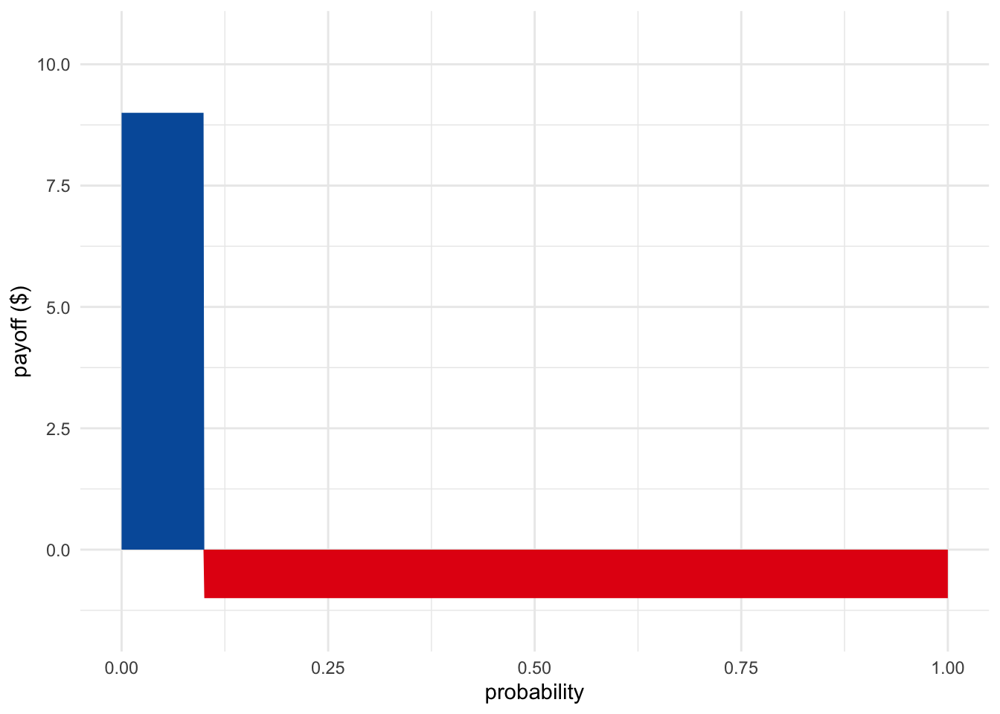
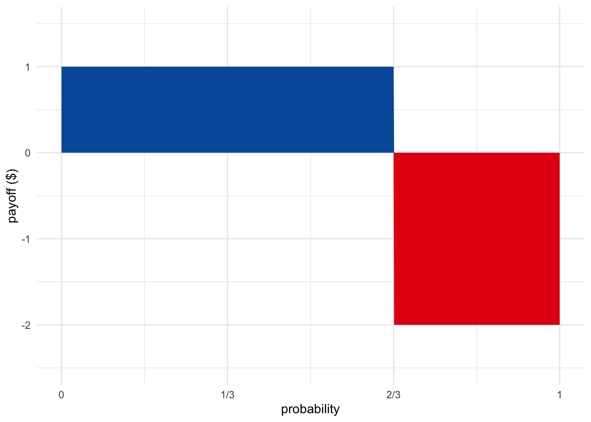

For Bayesians, probabilities are beliefs. When I say it’ll probably rain today, I’m telling you something about my personal level of confidence in rain today. I’m saying I’m more than \(50\%\) confident it’ll rain.
But how can we quantify something as personal and elusive as a level of confidence? Bayesians answer this question using the same basic idea we used for utility in Chapter 12. They look at people’s willingness to risk things they care about.
The more confident someone is, the more they’ll be willing to bet. So let’s use betting rates to quantify personal probabilities.
I said I’m more than \(50\%\) confident it’ll rain today. But exactly how confident: \(60\%\)? \(70\%\)? Well, I’d give two-to-one odds on it raining today, and no higher. In other words, I’d accept a deal that pays \(\$1\) if it rains, and costs me \(\$2\) otherwise. But I wouldn’t risk more than \(\$2\) when I only stand to win \(\$1\).
In this example I put \(2\) dollars on the table, and you put down \(1\) dollar. Whoever wins the bet keeps all \(3\) dollars. The sum of all the money on the table is called the stake. In this case the stake is \(\$2 + \$1 = \$3\).
If it doesn’t rain, I’ll lose \(\$2\). To find my fair betting rate, we divide this potential loss by the stake: \[ \begin{aligned} \mbox{betting rate} &= \frac{\mbox{potential loss}}{\mbox{stake}}\\ &= \frac{\$2}{\$2 + \$1}\\ &= \frac{2}{3}. \end{aligned} \]
 Figure 16.1: A bet that pays \(\$1\) if you win and costs \(\$2\) if you lose, is fair when the blue and red regions have equal size: when the probability of winning is \(2/3\).
A person’s betting rate reflects their degree of confidence. The more confident they are of winning, the more they’ll be willing to risk losing. In this example my betting rate is \(2/3\) because I’m \(2/3\) confident it will rain. That’s my personal probability: \(\p(R) = 2/3\).
Notice that a bet at two-to-one odds has zero expected value given my personal probability of \(2/3\): \[ (2/3)(\$1) + (1/3)(-\$2) = 0. \] This makes sense: it’s a fair bet from my point of view, after all.
 Figure 16.2: A bet that pays \(\$9\) if you win and costs \(\$1\) if you lose is fair when the probability of winning is \(1/10\).
What if I were less confident in rain, say just \(1/10\) confident? Then I’d be willing to stake much less. I’d need you to put down at least \(\$9\) before I’d put down even \(\$1\). Only then would the bet have \(0\) expected value: \[ (1/10)(\$9) + (9/10)(-\$1) = 0. \] So, for the bet to be fair in my eyes, the odds have to match my fair betting rate.
Here’s the general recipe for quantifying someone’s personal probability in proposition \(A\):
Notice how we got the same formula we started with: potential loss divided by total stake.
You can memorize this formula, but personally, I prefer to apply the recipe. It shows why the formula works, and it also exposes the formula’s limitations. It helps us understand when the formula doesn’t work.
Personal probabilities aren’t revealed by just any old betting rate a person will accept. They’re exposed by the person’s fair betting rates.
Consider: I’d take a bet where you pay me a million dollars of it rains today, and I pay you just \(\$1\) otherwise. But that’s because I think this bet is advantageous. I don’t think this is a fair bet, which is why I’d only take one side of it. I wouldn’t take the reverse deal, where I win \(\$1\) if it rains and I pay you a million dollars if it does. That’s a terrible deal from my point of view!
So you can’t just look at a bet a person is willing to accept. You have to look at a bet they’re willing to accept because they think it’s fair.
Another caveat is that we’re cheating by using dollars instead of utils. When we learned about utility, we saw that utility and dollars can be quite different. Gaining a dollar and losing a dollar aren’t necessarily comparable. Especially if it’s your last dollar!
So, to really measure personal probabilities accurately, we’d have to substitute utilities for dollars. Nevertheless, we’ll pretend dollars and utils are equal for simplicity. Dollars are a decent approximation of utils for many people, as long as we stick to small sums.
Last but definitely not least, our method only works when the person is following the expected value formula. Setting the expected value equal to zero was the key to deriving the formula: \[ \p(A) = \frac{\mbox{potential loss}}{\mbox{stake}}. \] But we know people don’t always follow the expected value formula, that’s one of the lessons of the Allais paradox. So this way of measuring personal probabilities is limited.
Sometimes we don’t have the betting rate we need in order to apply the loss/stake formula directly. But we can still figure things out indirectly, given the betting rates we do have.
For example, I’m not very confident there’s intelligent life on other planets. But I’d be much more confident if we learned there was life of any kind on another planet. If NASA finds bacteria living on Mars, I’ll be much less surprised to learn there are intelligent aliens on Alpha Centauri.
Exactly how confident will I be? What is \(\p(I \given L)\), my personal probability that there is intelligent life on other planets given that there’s life of some kind on other planets at all?
Suppose I tell you my betting rates for \(I\) and \(L\). I deem the following bets fair:
You can apply the loss/stake formula to figure \(\p(I) = 1/10\) and \(\p(L) = 4/10\). But what about \(\p(I \given L)\)? You can figure that out by starting with the definition of conditional probability: \[ \begin{aligned} \p(I \given L) &= \p(I \wedge L)/\p(L) \\ &= \p(I)/\p(L) \\ &= 1/4. \end{aligned} \] The second line in this calculation uses the fact that \(I\) is equivalent to \(I \wedge L\). If there’s intelligent life, then there must be life, by definition. So \(I \wedge L\) is redundant. We can drop the second half and replace the whole statement with just \(I\).
The general strategy here is: 1) identify what betting rates you have, 2) apply the loss/stakes formula to get those personal probabilities, and then 3) apply familiar rules of probability to derive other personal probabilities.
We have to be careful though. This technique only works if the subject’s betting rates follow the familiar rules of probability. If my betting rate for rain tomorrow is \(3/10\), you might expect my betting rate for no rain to be \(7/10\). But people don’t always follow the laws of probability, just as they don’t always follow the expected utility rule. The taxicab problem from Chapter 8 illustrates one way people commonly violate the rules of probability. We’ll encounter another way in the next chapter.
Li thinks humans will eventually colonize Mars. More exactly, he regards the following deal as fair: if he’s right about that, you pay him \(\$3\), otherwise he’ll pay you \(\$7\).
Suppose Li equates money with utility: for him, the utility of gaining \(\$3\) is \(3\), the utility of losing \(\$7\) is \(-7\), and so on.
Li also thinks there’s an even better chance of colonization if Elon Musk is elected president of the United States. If Musk is elected, Li will regard the following deal as fair: if colonization happens you pay him \(\$3\), otherwise he pays you \(\$12\).
Li thinks the chances of colonization are lower if Musk is not elected. His personal conditional probability that colonization will happen given that Musk is not elected is \(1/2\).
Sam thinks the Saskatchewan Roughriders will win the next Grey Cup game. She’s confident enough that she regards the following deal as fair: if they win, you pay her \(\$3\), otherwise she’ll pay you \(\$7\).
Suppose Sam equates money with utility: for her, the utility of gaining \(\$3\) is \(3\), the utility of losing \(\$7\) is \(-7\), and so on.
Sam thinks the Roughriders will have an even better chance in the snow. If it snows during the game, she will regard the following deal as fair: if the Roughriders win, you pay her \(\$3\), otherwise she’ll pay you \(\$12\).
Sam thinks that the Roughriders will lose their advantage if it doesn’t snow. Her personal conditional probability that the Roughriders will win if it doesn’t snow is \(1/2\).
Sam thinks the Leafs have a real shot at the playoffs next year. In fact, she regards the following deal as fair: if the Leafs make the playoffs, you pay her \(\$2\), otherwise she pays you \(\$10\).
Suppose Sam equates money with utility: for her, the utility of gaining \(\$2\) is \(2\), the utility of losing \(\$10\) is \(-10\), and so on.
Sam also thinks the Leafs might even have a shot at winning the Stanley Cup. She’s willing to pay you \(\$1\) if they don’t win the Cup, if you agree to pay her \(\$2\) if they do. That’s a fair deal for her.
Freya isn’t sure whether it will snow tomorrow. For her, a fair gamble is one where she gets \(\$10\) if it snows and she pays \(\$10\) if it doesn’t. Assume Freya equates money with utility.
Here’s another gamble Freya regards as fair: she’ll check her phone to see whether tomorrow’s forecast calls for snow. If it does predict snow, she’ll pay you \(\$10\), but you have to pay her \(\$5\) if it doesn’t.
After checking the forecast and seeing that it does predict snow, Freya changes her betting odds for snow tomorrow. Now she’s willing to accept as little as \(\$5\) if it snows, while still paying \(\$10\) if it doesn’t.
Ben’s favourite TV show is Community. He thinks it’s so good they’ll make a movie of it. In fact, he’s so confident that he thinks the following is a fair deal: he pays you \(\$8\) if they don’t make it into a movie and you pay him \(\$1\) if they do. Assume Ben equates money with utility.
Ben thinks the odds of a Community movie getting made are even higher if his favourite character, Shirly, returns to the show (she’s on leave right now). If Shirly returns, he’s willing to pay as much as \(\$17\) if the movie does not get made, in return for \(\$1\) if it does.
Ben also thinks the chances of a movie go down drastically if Shirly doesn’t return. His personal conditional probability that the movie will happen without Shirly is only \(1/3\).